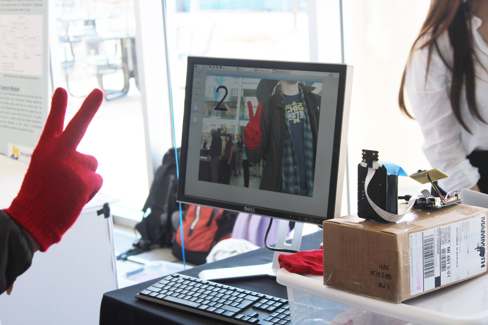
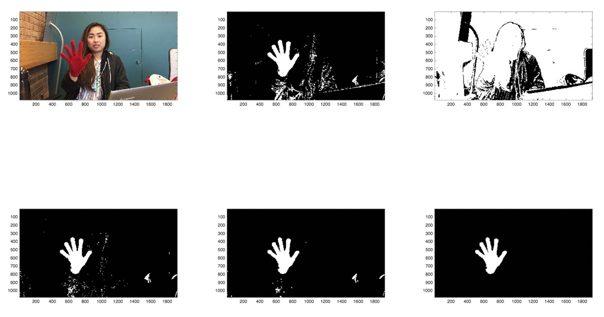
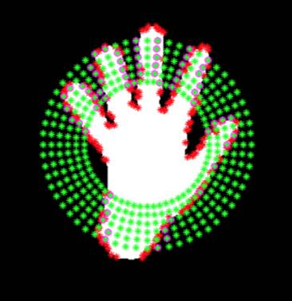
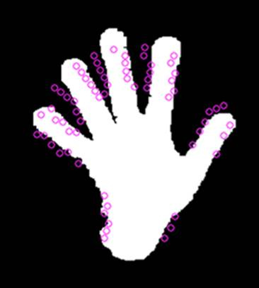

EECS 452 - Digital Signal Processing Design Lab
Stand Alone Gesture Recognition Device Using Raspberry Pi and OpenCV


Prototyping
All of the initial protyping was done with matlab using pre-recorded videos as input
Detection
Thresholding was done by converting images from the RGB to the HSV color space. From there we created a binary image by thresholding for red using the Hue and Saturation matricies. After that we used morphological operators to erode and dilate the image to reduce noise and improve accuracy. From there the largest connected component is taken.

Feature Extraction
To extract the features in the hand we plotted the centroid from the binary image. Then plotted all the boundary points of the hand (where image transitions from black to white). From the centroid we plotted multiple radii based on the nearest and furthest boundary points. These radii gave us the intersection points between the hand and the radii.
 
Classification
To classify the input we tested multiple instances of the same gesture to calculate the mean of the number of intersections. From there we are able to identify the gesture based on the mean number of intersections.